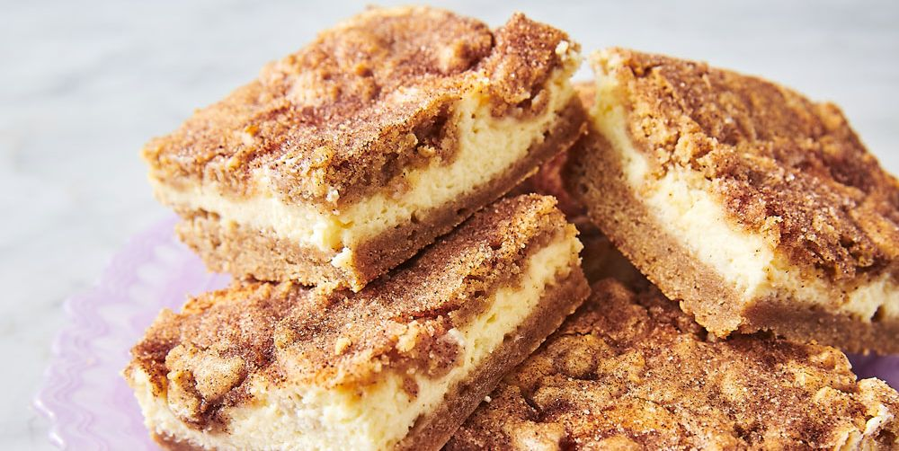

Snickerdoodle Cheesecake Bars

A wonderful mix of sweet and creamy!
Snickerdoodle Cheesecake Bars are like cookies and cheesecake in one! A homemade graham cracker crust is topped with
a creamy cheesecake layer and snickerdoodle cookie dough in this sweet and salty recipe.
We love cheesecake you can eat with your hands. These Caramel Apple Cheesecake Bars and Chocolate Cheesecake Bars are two more
incredible cheesecake recipes you will love.
Ingredients:
For the Cheesecake Layer
- 2 packages (8 ounce each) cream cheese, softened
- 1 cup granulated sugar
- 2 large eggs
- 1 teaspoon vanilla extract
- 1 teaspoon cinnamon
For the Snickerdoodle Layer
- 1 cup unsalted butter, softened
- 1 cup granulated sugar
- 1 large egg
- 1 teaspoon vanilla extract
- 1 teaspoon baking powder
- 1 teaspoon kosher salt
- 2 cups all-purpose flour
Directions:
- Line a 13x9 baking dish with parchment paper. Set aside. Preheat oven for 350 degrees.
- In a food processor, pulse graham crackers with pecans and sugar until fine crumbs. Add in melted butter and
pulse until combined.
- Press crumbs into bottom of prepared baking dish. Using palm of your hand (or bottom of a cup) press crumbs
firmly until they are pressed into the bottom of the pan.
- For the cheesecake filling, beat cream cheese with sugar, eggs, vanilla and cinnamon using the whisk attachment
of an electric mixer. Beat until fluffy and smooth (about 3-4 minutes). Pour over graham crust.
- In a small bowl, combine sugar and cinnamon topping. Sprinkle generously over the cookie dough layer.
Back to the Top
Return to Main Page